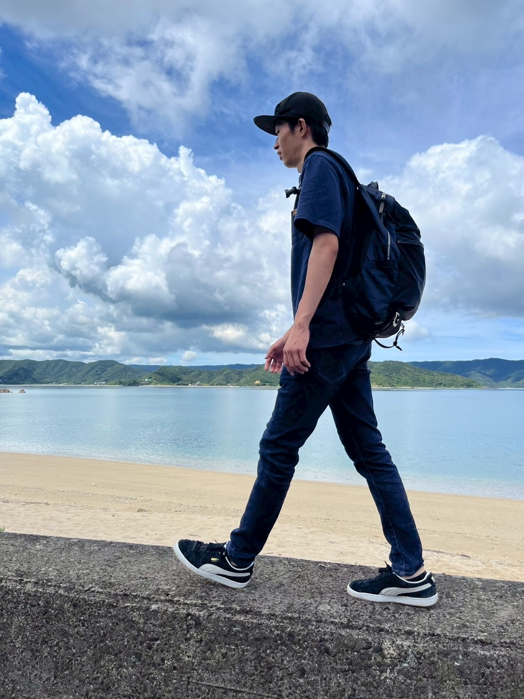

Shuntaro TOGO
Research Assistant, Disaster Prevention Research Institute, Kyoto University, Japan (Sayama Lab.)
Contact: togo.shuntaro.6r [at] kyoto-u.ac.jp
Mathematical and numerical modeling of groundwater and soil–water processes
 ORCID
ORCID